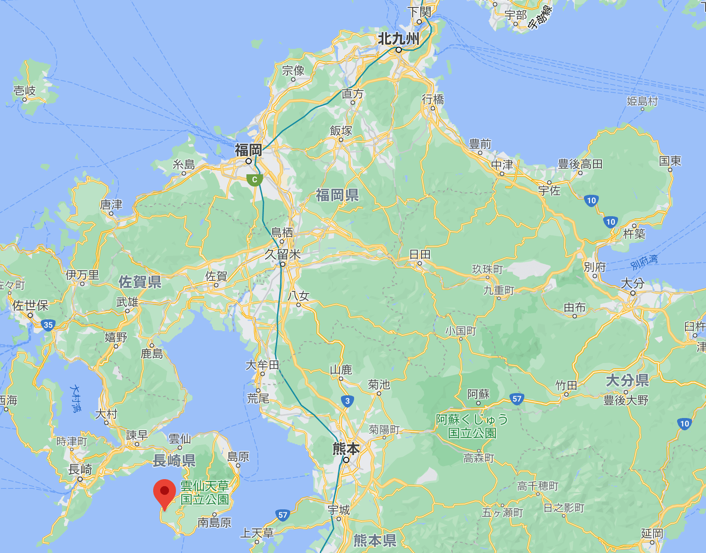
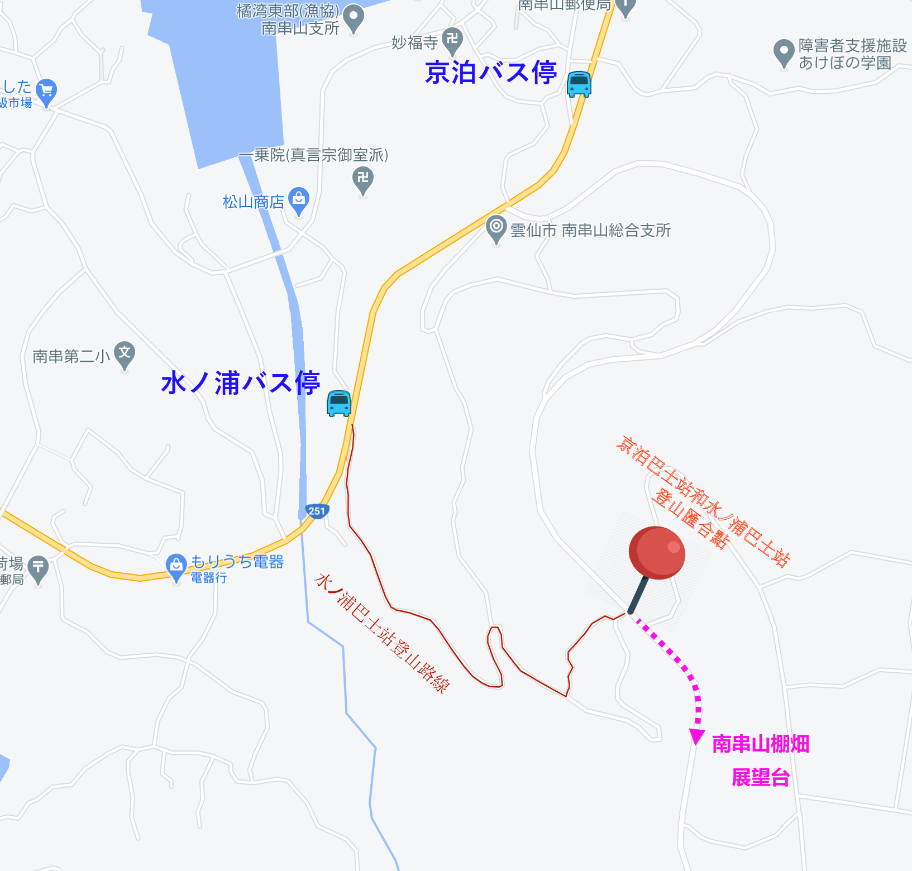
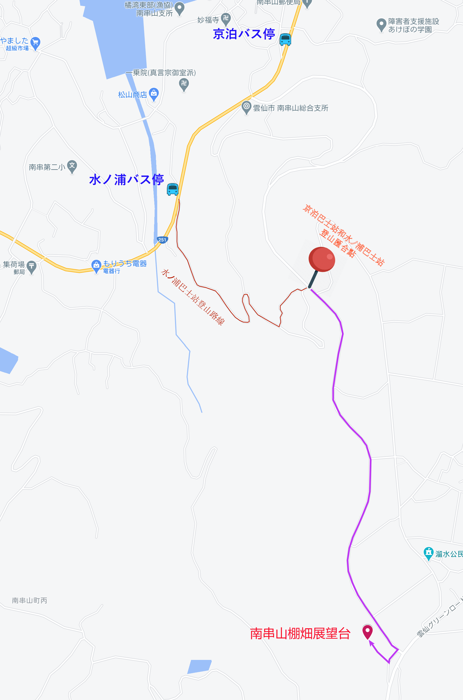
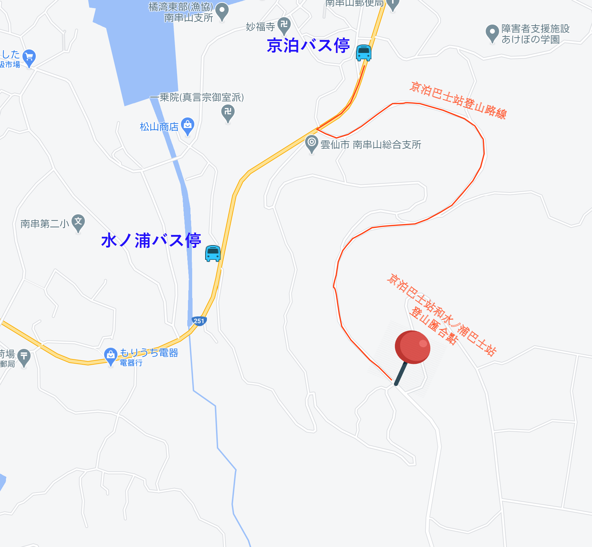

Hi! 大家好! 我係背包客網的 Kathy, 今日同大家介紹日本九州長崎縣 一個比較冷門, 但是風景非常漂亮的景點, 就是南串山棚畑 展望台 (Minamikushiya Terraced Rice Paddy Field Observatory)。
所謂棚畑, 同梯田的意思是一樣的。
首先介紹南串山棚畑的地理。
南串山棚畑位於日本南九州、長崎縣、島原半島、雲仙市最南面既南串山町丙。
位置有些偏遠, 不過, 可以搭乘巴士前往, 班次都相當多, 交通尚算方便, 是非常值得遊覽的景點。
南串山棚畑的風景非常漂亮, 尤其是站在山頂上的南串山棚畑展望台俯瞰,
腳下是彎彎曲曲、層層疊疊、依山而建的梯田, 一直延伸到海邊, 風景非常壯麗。
網上有關南串山棚畑展望台的資料十分稀少, 只有一兩個日本當地旅客自駕前往的簡單遊記, 而使用公共交通及步行上山前往的遊記, 相信可能只有我們。
Okay! 立即出發
*****
如果是利用公共交通方面前往, 就只有巴士可以選擇。
建議在諫早駅前巴士中心 (諫早駅前ターミナル) 乘搭, 可以順道遊覽途中經過的愛野展望台及小浜, 只要一台巴士就可以, 一天時間是足夠的。
諫早駅前巴士中心每天由早上6:30 開始, 平均每45分鐘就有一班車經過 南串山棚畑, 交通可以說是方便的。
記得巴士路線是「諌早駅前 – 口之津線」, 不要搭錯車呀!
巴士在諫早駅前巴士中心開車後, 會經過愛野展望台 及 小浜,
約一小時十分便抵達南串山棚畑。
在那個個巴士站落車呢?
可以選擇在 京泊巴士站 或 水ノ浦巴士站下車，然後開始步行上山。
至於在那一個巴士站下車? 主要分別是起初上山的一小段路是不同。
匯合後嘅路線就一樣的。
從地圖上來看，水ノ浦巴士站其實是比較近南串山棚畑 展望台的,
會走少一些路, 只是最初的一段道路比較陡斜, 要穿過梯田中嘅小路, 難走一些。
我們選擇了在 水ノ浦巴士站下車, 從這裡開始登山, 而下山時則選擇比較易走的路往京泊巴士站, 然後乘巴士離開。這是最理想的安排。
在 水ノ浦巴士站下車後, 旁邊的斜坡就是 南串山棚畑展望台 登山口。從這裡開始, 一直往上走便是了。路線其實好簡單!
Okay! 開始上山啦!
起初一段上坡路非常陡斜, 彎彎曲曲, 要穿越梯田中的小路。記得要小心一些, 千萬不要踩入菜地。
穿過梯田, 便來到一條馬路。如果選擇在京泊巴士站開始登山, 就會在這裡匯合。剛才都說過, 在水ノ浦巴 士站 或 京泊巴士站下車, 分別就是起初上山這一小段路而已。
在這匯合後, 接著上山的路線就完全一樣的。
整段上山道路穿梭於棚田之中, 風景十分優美, 目不暇給。
徒步往南串山棚畑展望台, 全程都是上坡, 有點吃力, 不過, 沿途風景那麼漂亮, 是非常值得的!
走走看看, 約40分鐘便抵達 南串山棚畑展望台的入口。
登上南串山棚畑展望台, 憑欄而望, 依山而建的梯田, 彎彎曲曲、層層疊疊, 一直延伸到如輕煙般的海邊, 風景非常壯麗, 不枉此行!
在南串山棚畑展望台欣賞完風景後, 循原路下山。
下山和上山的感覺截然不同, 換來是衝向梯田的感覺, 十分美妙!
很快來到 水ノ浦巴 士站 和 京泊巴士站 嘅登山匯合點。
我們決定選擇在京泊巴士站上車，這樣便可以走另一條路下山，
雖然路程遠了一些，但可以看不同的風景。
路程是遠了一些, 但因為全程都是下山, 所以約半小時便抵達 京泊巴士站。
南串山棚畑展望台的旅程就在這裡結束了!